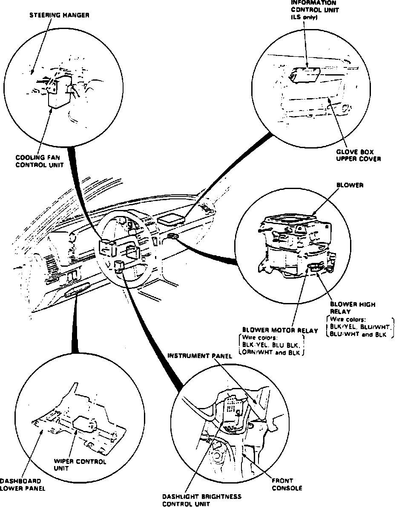

Operation CHARM
: Car repair manuals for everyone.
Home
>>
Acura
>>
1989
>>
Legend Coupe V6-2675cc 2.7L SOHC FI
>>
Repair and Diagnosis
>>
Windows and Glass
>>
Heated Glass Element
>>
Heated Glass Element Relay
>>
Locations
Heated Glass Element Relay: Locations
I/P Control Unit & Relay Locations (Part 1 Of 2):
I/P Control Unit & Relay Locations (Part 1 Of 2):

In I/P Relay Box